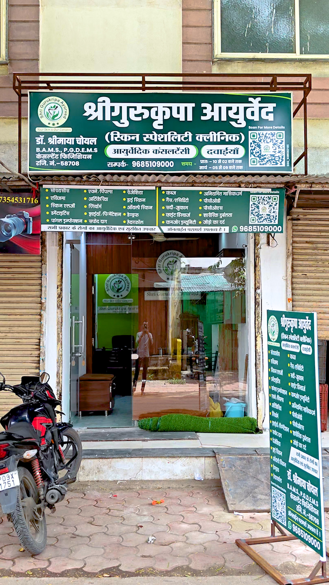
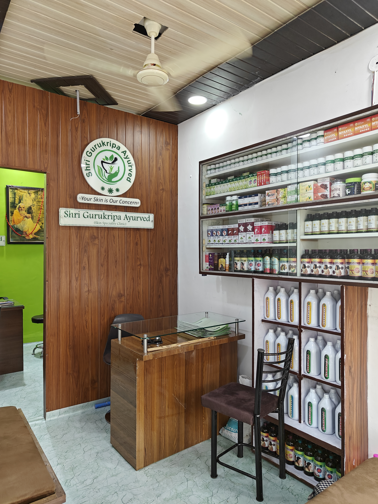
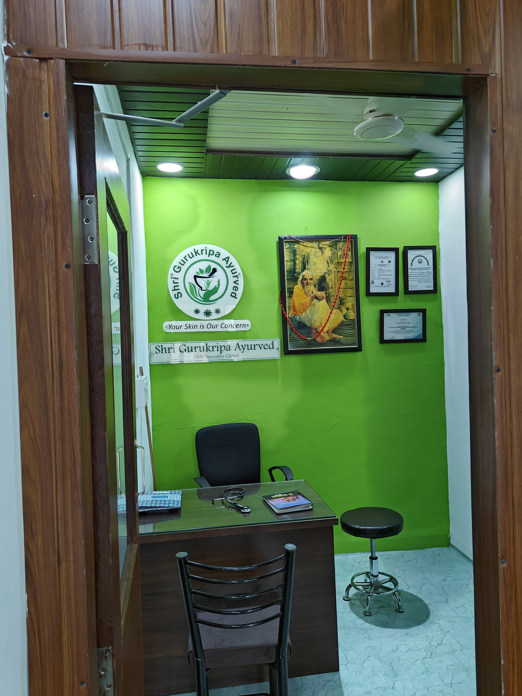
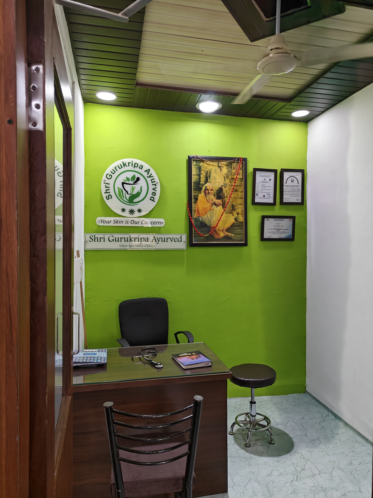

Shri Gurukripa Ayurved
Your Skin Is Our Concern
Skin Specialty Ayurvedic Clinic - Indore
WhatsApp Now Call Now
Your Skin Is Our Concern
Skin Specialty Ayurvedic Clinic - Indore
WhatsApp Now Call Now
B.A.M.S., P.G.D.E.M.S.
Clinic Timings
Morning: 10:00 AM - 2:00 PM
Evening: 5:00 PM - 9:00 PM
Experienced Ayurvedic Consultant dedicated to providing safe and effective Ayurvedic treatment for skin diseases and lifestyle disorders.
Special focus on Psoriasis, Eczema, Acne, Skin Allergy, Pigmentation, Hair Problems and Chronic Skin Disorders.




212 Sabji Mandi Road,
Sanchi Point Chauraha,
Kalani Nagar, Indore
Phone / WhatsApp: +91 96851 09000